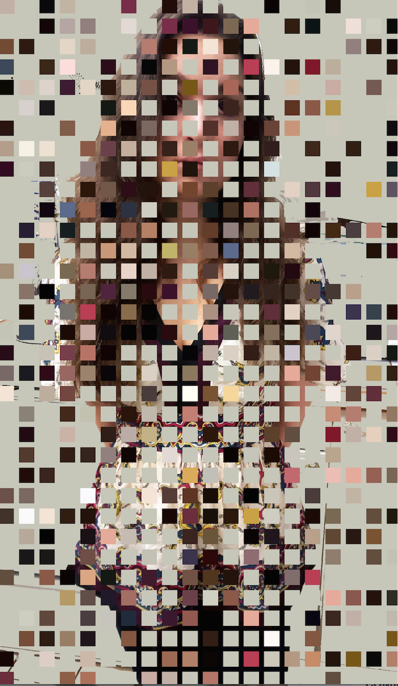
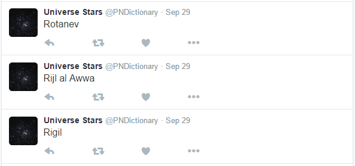

> Image Filters
Students designed their own Instagram-style image filters, implemented in Python. This involved accessing the pixel matrix of a source image and manipulating its color data to generate a new image.
Course: Methods and Data Structures, a graduate digital arts course.

A tinted posterization filter. By Rahlana Smith.
A colorful grid overlay derived from the color content of the original image. Inspired by the art of Ellsworth Kelly. By Elizabeth Cappello.

A textured, sepia-toned filter. By Sarah Steinhauer.

A collage filter that creates new collage artwork from fragments of the source image. By Stephanie Vizzi.
> Twitter Bots
For this project, students wrote their own creative Twitter Bots in Python. This project looked at social media as an art platform, as well as using APIs as data resources for art projects.
Course: Methods and Data Structures, a graduate digital arts course.

A mashup of MOMA artworks and Shakespeare quotes. Any relationship between words and text is accidental; however the bot is designed to create these accidents and to provoke mental associations between text and image. This bot used an API for the MOMA archive to retrieve its images. By Sarah Steinhauer.

An emoji landscape bot. By Kwasi Ofori Berko.
A bot that tweets the names of all the stars in the galaxy. This bot pulls its text from a large text dataset of star names. By Jess Kitrick.
> Sound Design and Composition
In these compositions, students learned to use the studio as an instrument, through sampling, signal processing, sequencing and mixing. These are examples of the three composition projects done during the semester to fulfill three different assignments.
Course: Introduction to Computer Music, an undergraduate music course.
Project 1: Audio Sampling. A musique concrete-inspired composition using sampling, sequencing, and audio effects to create a new composition using only open-source sound samples and a digital audio workstation. By Rachel Smith.
Project 2: Audio Synthesis. A composition limited to using additive synthesis techniques and studio effects such as panning and enveloping. Inspired by the elektronische musik of Karlheinz Stockhausen and the Cologne studio of the 1950s. By John Mann.
Project 3. An open composition project of electronic music, using any combination of sampling, synthesis, and signal processing. Here Carl uses parameter automation in Ableton Live to create a dynamic and evolving piece of sound collage. By Carl Bakenhus.
> Independent Studies
Andrew Bernstein: Tune.js and Gendy.js
During an independent study on the Web Audio API, Andrew and I collaborated to design and program a series of open-source Javascript toolkits for web audio, published on GitHub. We authored two papers documenting this work, which were both selected for presentation at the 2nd International Web Audio Conference at Georgia Tech.